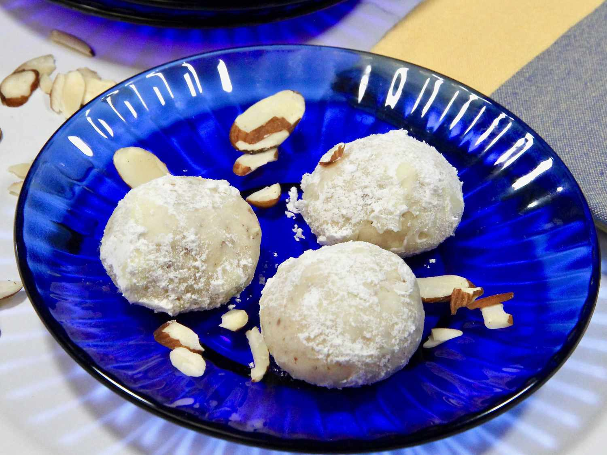

Hell's Slop Hall
White Wedding Cookies

♫ It's a nice day for some cute cookies ♫ If you're Billy Idol, you didn't see this!
If you're NOT Billy Idol, keep reading! Haha, sorry about that! These are your classic
Italian wedding cookies, with a stronger almond profile. These guys are an easy sweet treat
to bring to your next cookie exchange! Or gift them to your enemies - HEX directions NOT included.
Ingredients
1 1/2 cups unsalted butter
3/4 cup confectioner's sugar
3/4 tsp salt (or to taste)
1 1/2 cups finely ground almonds
4 1/2 tsp vanilla extract
3 cups sifted almond flour
1/3 cup confectioner's sugar for rolling
Directions
- Preheat oven to 325 degrees F.
- Place butter, 3/4 cup confectioner's sugar, and salt in a large bowl. Beat until
smooth and creamy (2-3 minutes with electric mixer).
-
Mix in ground almonds and vanilla.
-
Gradually blend in flour until well combined.
-
Shape into balls or crescents using about 1 tsp for each cookie;
Place 1" apart on ungreased cookie sheets.
-
Bake until just brown - ~15 - 20 minutes.
- Let cookies sit until slightly cooled - ~15 minutes. Roll cookies in
remaining confectioner's sugar.
-
Don't forget to say a quick prayer to Billy. : )